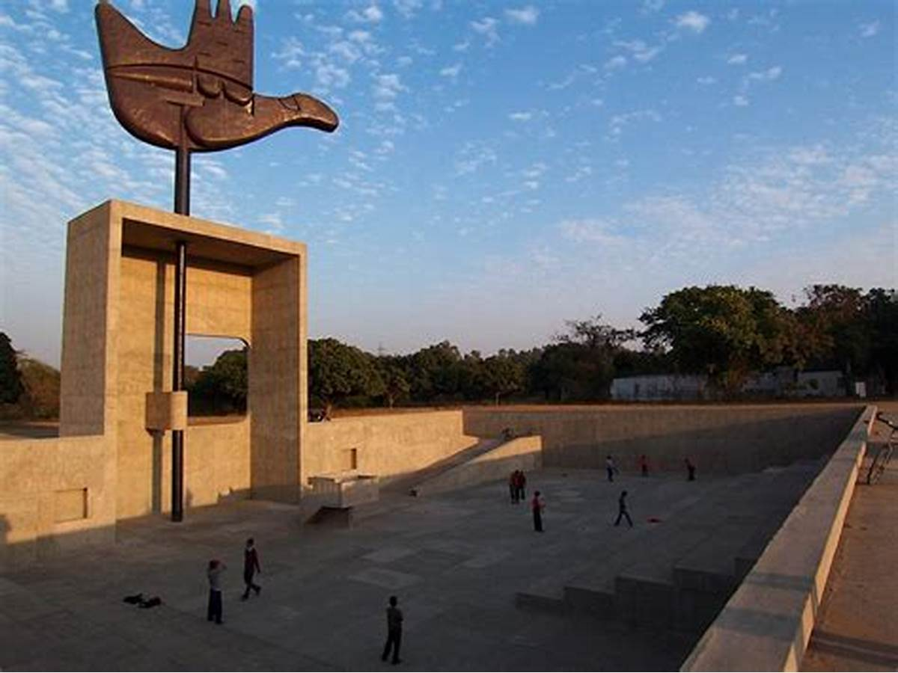
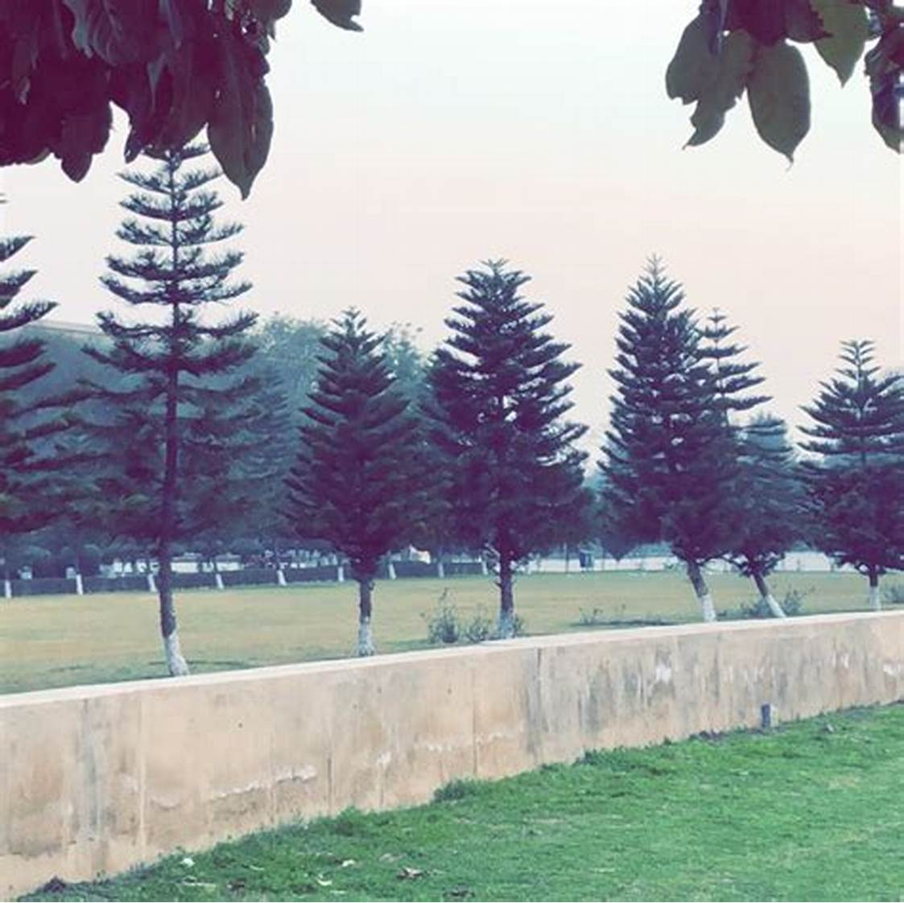

Photo Gallery - Monument Views



A symbol of peace and reconciliation in Chandigarh
The Open Hand Monument, located in the city of Chandigarh, India, is a significant architectural symbol designed by the renowned architect Le Corbusier. The monument stands as a testament to peace, prosperity, and unity. It is part of the Capitol Complex, a UNESCO World Heritage site, and serves as a reminder of the open hand's message: "Open to give, open to receive."
The Open Hand Monument is made of metal and stands at a height of 26 meters (85 feet). The design features a large, open hand that rotates with the wind, symbolizing the concepts of change and progress. Le Corbusier envisioned the monument as a moving structure that would reflect the city's dynamism and forward-looking spirit. The hand itself is mounted on a central pivot and can turn in the direction of the wind, making it a unique piece of kinetic art.
The monument was conceived as part of Le Corbusier's master plan for Chandigarh, a city that was to represent the hopes and aspirations of a newly independent India. The Open Hand was intended to embody the values of peace and reconciliation in a nation emerging from the trauma of partition. Its design and placement in the Capitol Complex underscore its role as a symbol of governance and civic life, reflecting Le Corbusier's philosophy of modern urban planning.
The Open Hand is more than just a piece of art; it carries deep symbolic meaning. The open hand signifies openness, trust, and mutual respect. It represents the idea of giving and receiving without prejudice, fostering a sense of community and cooperation. The rotating motion of the hand highlights the importance of adaptability and the ever-changing nature of life, urging people to embrace change and innovation.
The Open Hand Monument has become an iconic landmark in Chandigarh, attracting visitors from around the world. It stands as a powerful representation of the city's identity and values. The monument is frequently featured in cultural events, educational programs, and artistic initiatives, serving as a source of inspiration for architects, artists, and urban planners. Its presence in the Capitol Complex enhances the area's cultural and historical significance, making it a must-visit destination for those interested in architecture and history.